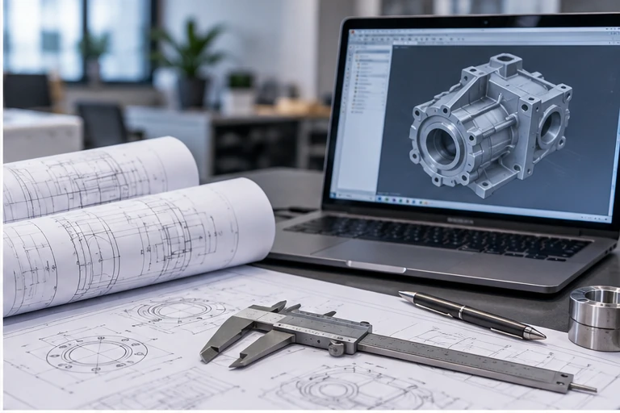
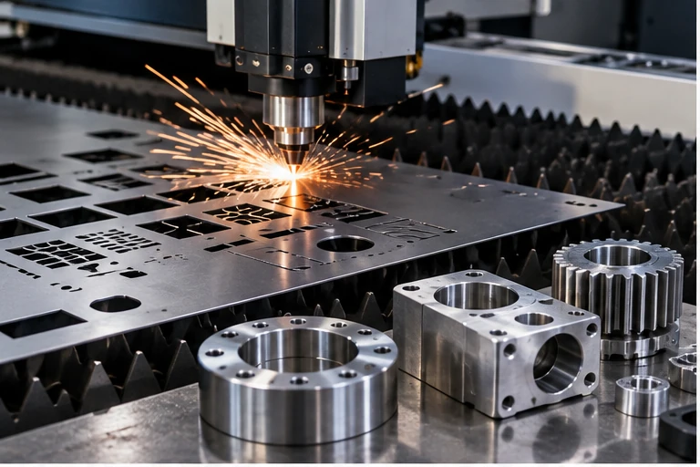
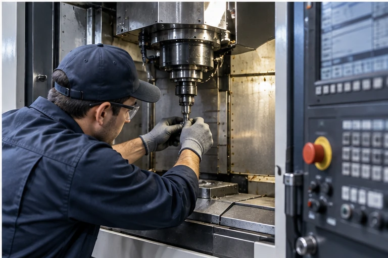

Engineering-led. Flexible. Built around practical industrial requirements.
Crecer Grande is an Indian engineering and industrial-solutions venture supporting manufacturing and engineering businesses with design, manufacturing, maintenance, products, automation, quality and business-support capabilities.
What we are building
Crecer Grande is structured as a lean, requirement-led industrial support business. We combine in-house coordination with an on-demand network of engineers, technicians, manufacturing partners and specialised suppliers.
The objective is simple: help customers move from a technical requirement to a workable engineering, manufacturing, sourcing, maintenance or compliance route without creating unnecessary layers of coordination.
Working principles
- Technical requirement first
- Clear scope before commercial commitment
- Practical engineering over generic claims
- Flexible project-specific resources
- Transparent role boundaries
- Documentation and traceability where applicable
Registered and operating from West Bengal
Asset-light, engineering-led and project-specific.
We do not present every capability as a permanently owned machine or large in-house workforce. Resources and partner facilities are coordinated according to the actual requirement.
Engineering
Design, technical review, reverse engineering, documentation and problem definition.
Execution
Manufacturing, sourcing, maintenance, automation and inspection through appropriate resources.
Business support
Quality systems, compliance readiness, tender documentation and supplier coordination.
Engineering thinking connected to practical execution.
We combine technical definition, manufacturing coordination and industrial support around the actual requirement.

Engineering & Design
CAD, drawings, BOM, DFM and reverse engineering.

Manufacturing & Components
Laser, machining, fabrication and 3D printing support.

Industrial Support
Maintenance, troubleshooting, sourcing and field coordination.